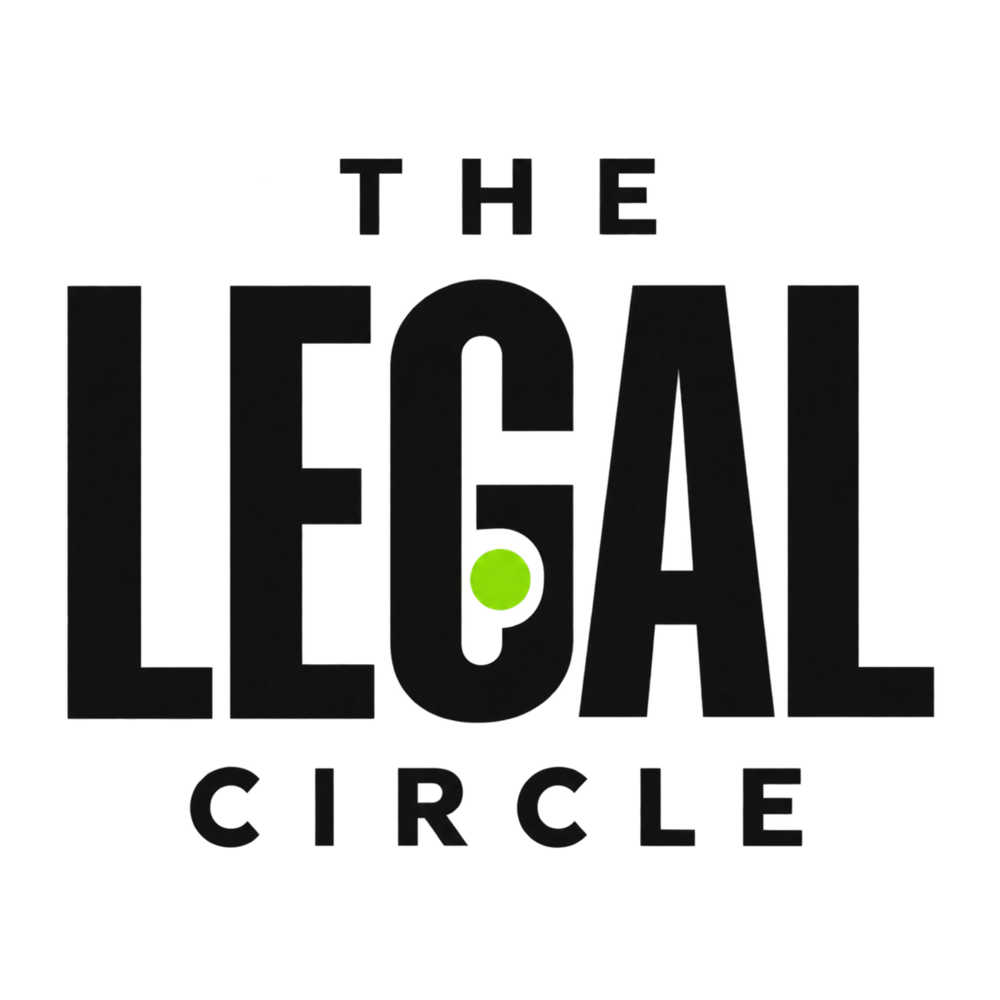

Get your expertise seen
Put yourself forward for interviews, podcast conversations and credited articles. Share your perspective and give more people a reason to remember your name.
Put yourself forward
Join LinkedIn groupThe Legal Circle — A media and networking platform for legal professionals.
The Legal Circle brings together legal news, expert perspectives, marketing and business development insights to help you stay informed, build visibility and advance your practice or career.
Connect with peers, put yourself forward for interviews and articles, and discover upcoming podcasts, webinars and in-person events.
Why join The Legal Circle?
Your expertise deserves to be known. The Legal Circle brings legal professionals together to share their knowledge, explore ways to grow their practices and build relationships that can lead to new opportunities.
Put yourself forward for interviews, podcast conversations and credited articles. Share your perspective and give more people a reason to remember your name.
Put yourself forwardExplore legal marketing, PR, personal branding and business development through practical discussions, shared experiences and professional webinars.
Meet peers, exchange ideas and discover potential collaborators and referral relationships through online conversations and planned in-person gatherings.
Comment on posts, ask questions and share what has worked for you. Suggest the topics, guests and challenges you want the community to explore.
Help shape upcoming interviews, discussions and events as the community grows.
Inside the Circle
Meet legal professionals across practice areas, share what you know and explore new ways to develop your reputation and practice.
Connect with professionals in other practice areas, discuss shared challenges and build relationships that could lead to collaboration and referrals.
Exchange practical ideas about attracting clients, building your reputation and developing your firm—from LinkedIn and content to PR and client experience.
Put yourself forward for conversations about your expertise, career and perspective on the profession. Suggest a guest or a question you would like explored.
Propose an interviewPropose an article or contribute an expert perspective, with author credit, a short biography and a link to your professional profile.
Propose an articleSuggest topics, express interest in speaking and explore planned professional learning sessions. Paid sessions will clearly show their presenter, focus and price.
Suggest a sessionTake part in LinkedIn discussions and help shape future online and in-person gatherings around shared interests.
Join the conversation
Join lawyers and legal professionals exchanging ideas about growing a practice, building visibility and making useful connections. Share your expertise, put yourself forward for interviews and help shape future conversations and events.
Join The Legal Circle on LinkedIn